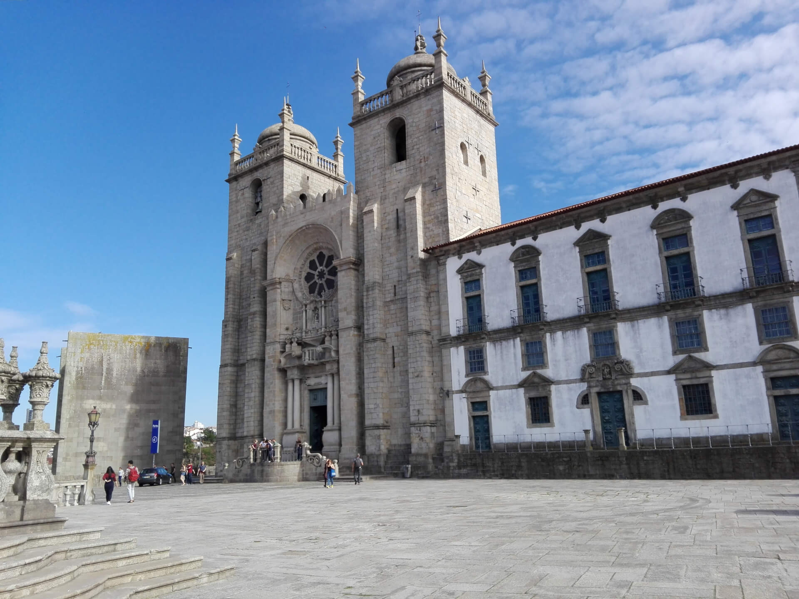
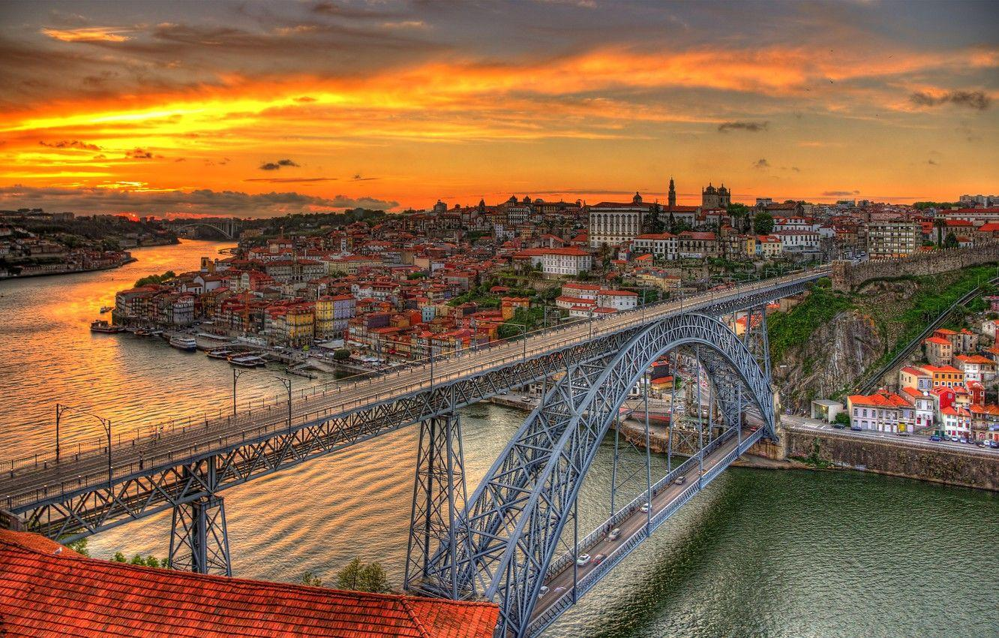
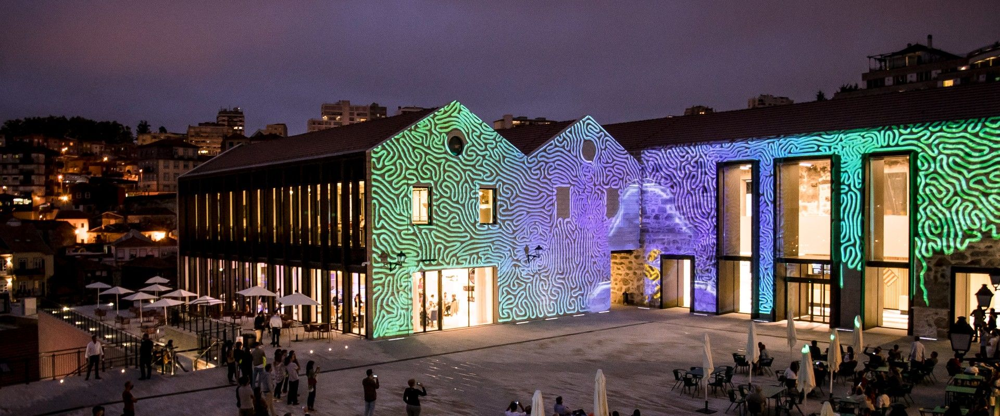
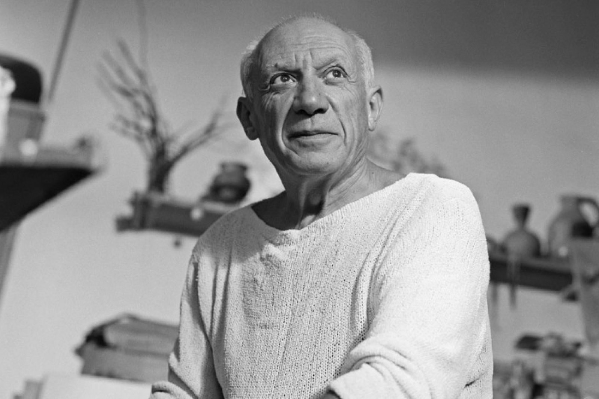

BEM-VINDO! , WELCOME !
Welcome to our dedicated Porto website, a city rich in history, culture, and beauty. Explore our site to discover everything Porto has to offer, from the latest news to iconic landmarks and unique services. We are delighted to guide you through this virtual experience of one of Portugal's most captivating destinations!
1 / 11

Porto Cathedral - Saint Mary of Porto
2 / 11

Plaza de la Libertad
3 / 11

Ponte Dom Luis
4 / 11

Capela das Almas
5 / 11

Porto Museum - World of Wine
7 / 11

Teleferico de Gaia
8 / 11

Casa portuguesa do pastel de bacalhau
9 / 11

Church of Saint IlDefonse
10 / 11

Funicular dos Guindais
11 / 11

Clerigos Tower
❮
❯
Highlights of Porto :
- Porto's historic centre is one of the oldest in Europe and has been recognised by UNESCO as a World Heritage Site. The narrow cobbled streets, colourful houses and centuries-old churches offer a glimpse into the city's rich history.
- The bridges spanning the Douro River, such as the Dom Luís I Bridge, are emblematic of Porto. These majestic structures offer panoramic views over the city and are masterpieces of engineering. They also create a unique and memorable urban landscape.
- Porto is a hotbed of culture and art. Museums, art galleries and theatres abound, showcasing the city's cultural heritage. Festivals and artistic events throughout the year make Porto a dynamic place for art and culture lovers.
- Although Porto is often associated with its historic architecture, the city also offers access to magnificent beaches. The fine sandy beaches of Foz do Douro offer a tranquil escape, and the proximity of the sea provides opportunities for water sports and relaxing in the sun.
Celebrities Testimonials

Pablo Picasso
“ Porto's cultural richness lies in its diversity, where every corner is a new page in a fascinating book. ”
Elon Musk
“ Porto's majestic bridges are links between history and the future, a perfect balance between tradition and innovation. ”
J.K. Rowling
“ There's something magical in the Porto air that brings creativity and inspiration to life. ”
Albert Einstein
“ Imagination is more important than knowledge. Knowledge is limited. Imagination encircles the world. ”
❮
❯
Want to discover more ?
Start your Porto adventure now
by exploring our sections: